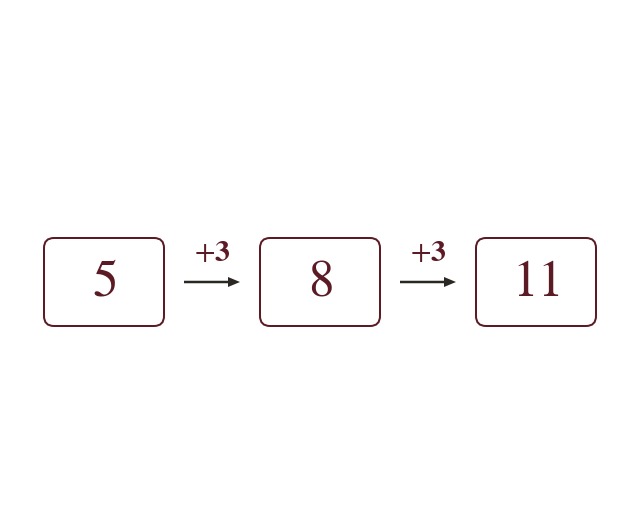
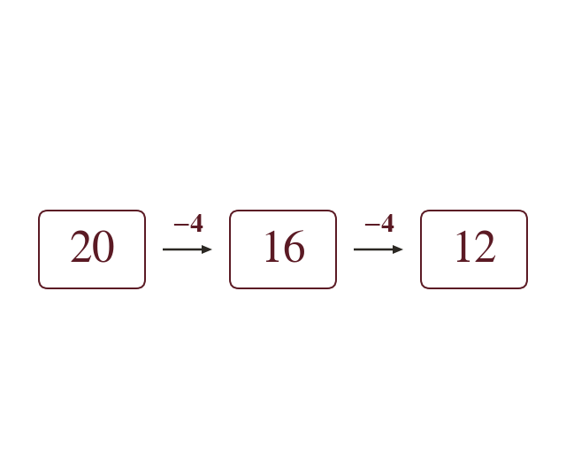
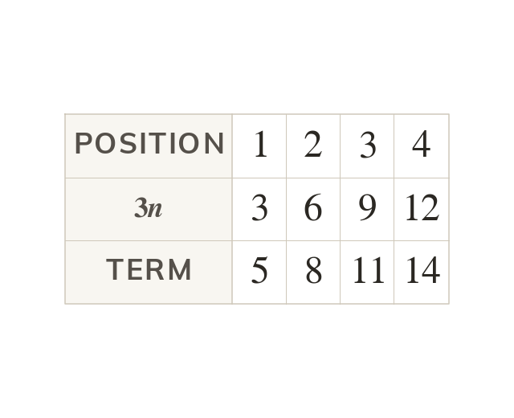
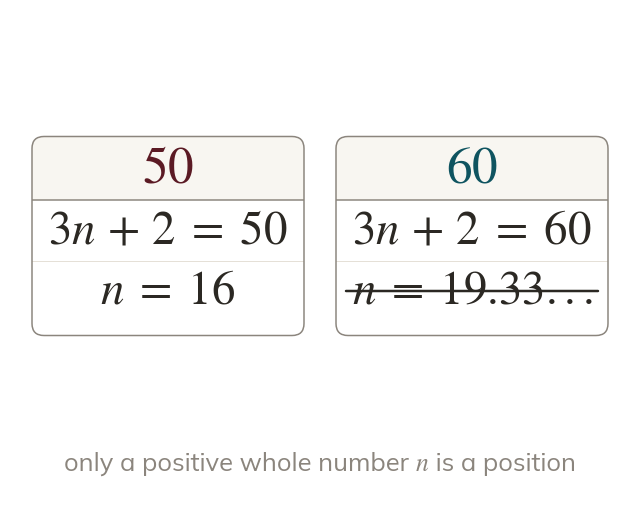

Topic 8.14 · Sequences and Double Brackets · Lesson 3 of 6
Arithmetic Sequences and nth Term
An arithmetic sequence grows by the same step every time, like the seats in each row of a theatre. Its nth term jumps straight to row or shows that a number cannot be in it at all.
By the end you’ll know…
An arithmetic sequence goes up or down by the same amount each time, its common difference.
The common difference is found by subtracting any term from the one after it.
The nth term takes the form dn + where d is the common difference.
is found by working back one step from the first term, so = first term - d.
A number is a term of the sequence only if solving dn + for it gives a positive whole number n.
By the end you can
G5Find the next terms and the common difference of an arithmetic sequence.
G5Find and use the nth term rule of an arithmetic sequence, including to test whether a number is a term.
Work down the page at your own pace. Write every answer in your book first, then click to check it.
01
Do Now
About 5 minutes
1
Work out
2
Work out
3
Find the value of when
Remember these?
LAST LESSONWrite the first five cube numbers.
LAST WEEKSales were and over five months. Describe the trend.
Rising overall, with a dip in month
LAST TERMThree angles of a quadrilateral are and Find the fourth.
LAST YEARIncrease by
02
Learn
Read each card, then follow the worked examples one step at a time.

The same step each time
An arithmetic sequence changes by the same amount each time. This common difference is the next term minus the term before.
An arithmetic sequence goes up or down by the same amount each time, called the common difference. It is found by subtracting any term from the one after it.

Going down
A decreasing sequence has a negative common difference. For it is not
WORKED EXAMPLE A
Find the common difference and the next two terms of
Find the difference
Add
Add again
Common difference
Next two terms
WORKED EXAMPLE B
Find the common difference and the next two terms of
Find the difference
Subtract
Subtract again
Common difference
Next two terms
YOUR TURN · a
Find the common difference and the next two terms of
Hint. Follow the worked example: Find the difference → Add → Add again → Common difference → Next two terms
then and
YOUR TURN · b
Find the missing terms: ?, ?,
Hint. Follow the worked example: Find the difference → Subtract → Subtract again → Common difference → Next two terms
over steps, so the difference is : and
03
Check your understanding
Pick an answer. If it's wrong, the feedback tells you which mistake it was.
What is the common difference of ?
Not quite. Each term goes down by so the difference is
Not quite. is a term. The difference is the change each step:
Yes. and it stays each step.
Not quite. is the first term. The difference is
How is the common difference of an arithmetic sequence found?
Yes. Subtract each term from the next one: second − first.
Not quite. The first term is where it starts, not the size of each step.
Not quite. Arithmetic sequences add a fixed amount, so subtract, don't divide.
Not quite. Do next term minus the term before, or the sign flips.
Which sequence has common difference ?
Not quite. These don't change by the same amount:
Yes. goes down each time:
Not quite. to goes up so that difference is
Not quite. These go up so the difference is not
04
Practise
mark as you go
Checkpoint.Show your teacher before you go on
1.
Find the common difference of
Hint. Follow the worked example: Find the difference → Add → Add again → Common difference → Next two terms
2.
Find the next three terms.
Hint. Follow the worked example: Find the difference → Add → Add again → Common difference → Next two terms
1
Find the common difference and the next two terms of
Hint. Follow the worked example: Find the difference → Add → Add again → Common difference → Next two terms
Difference: Next two:
2
Kim says the common difference of is What is her mistake? Find the next two terms.
Hint. Follow the worked example: Find the difference → Add → Add again → Common difference → Next two terms
The terms go down, so the difference is negative Difference: Next two:
3
Find the common difference and the next two terms of
Hint. Follow the worked example: Find the difference → Add → Add again → Common difference → Next two terms
Difference: Next two:
4
Find the missing terms: ?, ?,
Hint. Follow the worked example: Find the difference → Add → Add again → Common difference → Next two terms
over steps: difference
5
Find the common difference and the next two terms of
Hint. Follow the worked example: Find the difference → Add → Add again → Common difference → Next two terms
Difference: Next two:
EXT
Find the missing terms: ?, ?, ?,
Hint. Follow the worked example: Find the difference → Add → Add again → Common difference → Next two terms
over steps: difference
05
Learn
Read each card, then follow the worked examples one step at a time.

The nth term is dn +
The nth term of an arithmetic sequence is dn + is the common difference. = first term − : one step back from the first.
The nth term of an arithmetic sequence is dn + where d is the common difference. The number is found by stepping back one term from the first: = first term - d.

Is it a term?
Solve dn + = the number. It is a term only if is a positive whole number. For is not a term.
A number is in the sequence only if solving dn + = the number gives a positive whole number So gives but gives so is not a term.
The nth term from a pattern
WORKED EXAMPLE C
Find the nth term of
The difference is so the rule starts
Step back one term
nth term
WORKED EXAMPLE D
Is a term of ?
Write the nth term
Set it equal to
Subtract from both sides
Divide by
Conclusionn is not whole, so is not a term
YOUR TURN · c
Find the nth term of
Hint. Follow the worked example: Step back one term → nth term
Difference ;; nth term
YOUR TURN · d
Is a term of the sequence with nth term ?
Hint. Follow the worked example: Write the nth term → Set it equal to → Subtract from both sides → Divide by → Conclusion
gives so yes: the 12th term.
06
Check your understanding
Pick an answer. If it's wrong, the feedback tells you which mistake it was.
What is the nth term of ?
Not quite. The difference, goes with :
Yes. Difference gives ; and so
Not quite. The first term isn't
Not quite. Multiply by the difference: then add c.
Is a term of the sequence with nth term ?
Not quite. is the term, not Solve
Yes. so which isn't a whole number: no.
Not quite. Term positions are whole numbers, so means no.
Not quite. Being odd isn't enough. Solve
For the nth term dn + how is found?
Not quite. is the difference. c is what's left: first term −
Not quite. Step backwards, so subtract : = first term −
Yes. Step back one place from the first term: = first term −
Not quite. The first term is Take off to find
07
Practise
mark as you go
Checkpoint. A sequence begins Show your teacher before you go on
1.
Find its nth term.
Hint. Follow the worked example: Step back one term → nth term
2.
Decide whether is a term.
Hint. Follow the worked example: Step back one term → nth term
gives a whole number, so yes - the 9th term
1
Ben says the nth term of is What is his mistake?
Hint. Follow the worked example: Step back one term → nth term
Check : not is the term before the first: nth term:
2
Find the nth term of
Hint. Follow the worked example: Step back one term → nth term
Difference ; nth term:
3
Find the nth term of
Hint. Follow the worked example: Step back one term → nth term
Difference ; nth term:
4
Is a term of the sequence with nth term ?
Hint. Follow the worked example: Step back one term → nth term
so not a whole number: no
5
Is a term of ...?
Hint. Follow the worked example: Step back one term → nth term
so : yes, the 20th term
EXT
Two sequences have nth terms and Which number is in the same position in both?
Hint. Follow the worked example: Step back one term → nth term
so and The 4th term of both:
08
Exit ticket
On paper, on your own, then check
1
How do you decide whether a number is a term of the sequence with nth term dn + ?
Solve dn + = the number; it is a term only if n is a positive whole number.
2
Find the common difference and the next two terms of
then and
3
Find the nth term of and use it to find the 50th term.
;
Finished? Next lesson: 8.14.4 Factorising and Expanding.
09
How did it go?
Be honest: it's just for you
For each skill, tap the one that is true for you today. Your Revise pages start with anything you mark Not yet.
Find the next terms and the common difference of an arithmetic sequence.
Find and use the nth term rule of an arithmetic sequence, including to test whether a number is a term.
Your ratings are saved on this device only.
Practise more
After the lesson, or whenever you want more
Dr Frost
Log in, then search for a code to practise that skill.
203iDetermine the next term(s) in an arithmetic sequence.
205bDetermine the nth term formula for an ascending arithmetic sequence.
206cDetermine whether a number is a term in an arithmetic sequence using algebra.